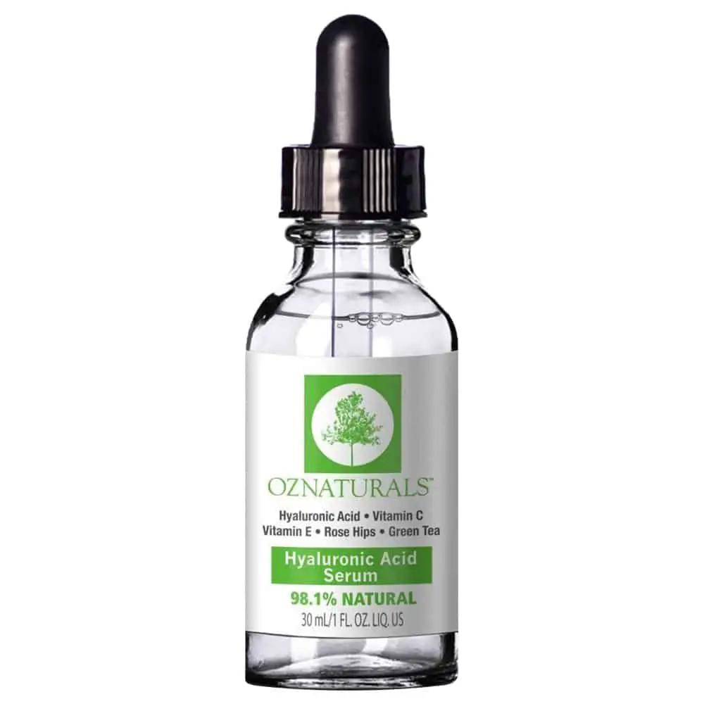
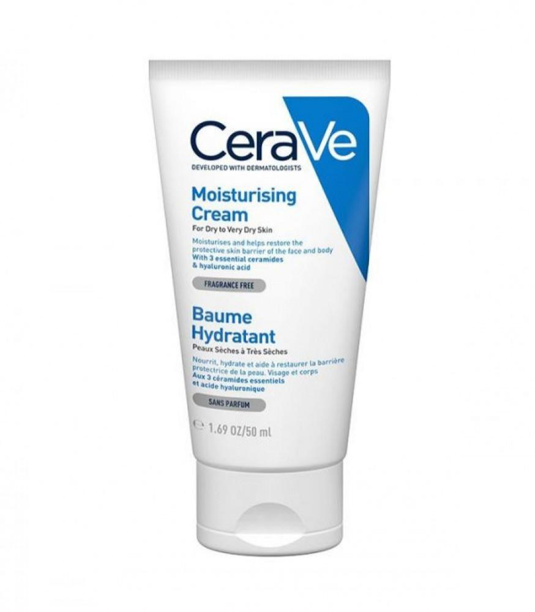
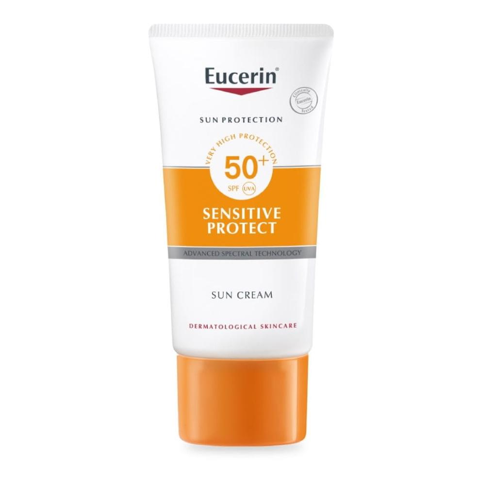

البشرة الجافة هي أحد أنواع البشرة التي تتميز بمظهرها الجاف، والذي قد يصل أحيانًا لدرجة مزعجة من التشقق والقشور
الحكّة المفرطة هي من أكثر المشاكل الشائعة التي ترافق جفاف البشرة. للأسف، غالبًا ما يؤدي خدش المنطقة
المصابة بالحكة إلى زيادة الحساسية تجاه العوامل البيئية!.
تظهر هذه المشكلة عادةً عندما تكون البشرة جافة جدًا لدرجة أنها تتقشر. .
تظهر أحيانًا نتوءات حمراء وملتهبة على الخدين - وخاصة حول الفم والذقن والأنف - نتيجة الجفاف.
هنالك مجموعة من العوامل التي تؤثر سلباً على البشرة وتزيد من جفافها. ومنها:
تعد العناية المستمرة من طرق علاج البشرة الجافة والتي تتم بعدة طرق، منها:
يحتوي زيت الزيتون على مضادّات الأكسدة بالإضافة إلى الأحماض الدهنية الصحية المُفيدة للبشرة، التي تعمل على
ترطيب البشرة الجافة في جميع أنحاء الجسم.
يُعّد اللبن أحد العوامل الفعّالة في ترطيب البشرة؛ لأنّه يعمل على تَقشير البشرة، وإزالة الجلد الميت فيها للحصول على بشرة
مُنتعشة، ويُعتَبر اللبن مضاداً للالتهابات؛ لأنه يحتوي على حمض اللبنيك الذي يتخلُّص من الجراثيم والبكتيريا التي تسبّب الجفاف. .
يحتوي الحليب على خصائص مضادة للإلتهابات ومهدئة وتساعد بشكل فعال على التخلص من البشرة الجافة والحكة، بالإضافة إلى
ذلك يساعد حمض اللاكتيك الموجود في الحليب على تقليل خلايا الجلد الميتة ويزيد من قدرة الجلد على الاحتفاظ بالرطوبة. كما أنه يساعد على تفتيح البشرة،. .
يفضل عند استخدام المنظف المناسب لنوع بشرتك لابد أن يكون نوع منظف مرطب هناك العديد من المنظفات الخاصة بالبشرة
التي تحتوي على نوع ترطيب داخلي تجنبًا لتفاقم المشكلة لذا كوني حريصة على تنظيف بشرتك بمنظف مرطب لا يضر بطبقة الجلد الخارجية.
بعد الانتهاء من مرحلة التنظيف قومي بتجفيف البشرة ثم قومي بوضع التونر المناسب الخالي من الكحول لكي
يساعد على استرجاع درجة الحموضة للبشرة وأيضًا يساعد على غلق المسام.
هناك العديد من أنواع السيروم المغذية للبشرة فعلى حسب نوع المشكلة التي تعاني منها
قومي باختيار نوع سيروم معالج.
بعد الانتهاء من جميع المراحل السابقة قومي باختيار مرطب يساعد على ترطيب البشرة بشكل عميق بعد
السيرم، فالمرطب عامل مهم للحفاظ على فوائد السيروم للبشرة.
واقي الشمس خطوة مهمة لا يمكن الاستغناء عنها للحفاظ على البشرة من التعرض للحروق أو الاسمرار
لذا كوني حريصة على استخدام أنواع ذات نسبة حماية مناسبة لكِ للحفاظ على الجلد ويفضل أيضًا أن يجدد كل ساعتين.
غسول ستافيل
سيروم هايرونك اسيد اوز ناتشورال
مرطب سيرافي
واقي شمس يوسيرن